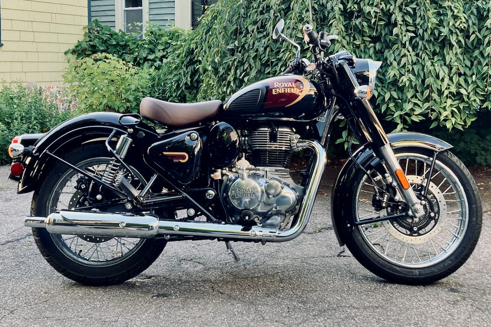

X02 / Motorcycles
Classic 350 vs Himalayan 450.
Two Royal Enfields with the same 349/452 cc single-cylinder philosophy, but different weights, seats and purposes. The Himalayan is taller, longer-travel and more expensive.



The case for each vehicle
Case for the Classic 350
- 27 Nm at 4,000 rpm gives strong low-end pull.
- An 805 mm seat and 170 mm clearance are easy to live with.
- No official efficiency figure or published standard-warranty duration.
Case for the Himalayan 450
- 40 Nm at 5,500 rpm, 230 mm clearance and 200 mm suspension travel.
- A 17 L tank and a 36-month / 30,000 km transferable warranty.
- 196 kg kerb, an 825–845 mm seat and the highest price in the set.
Published figures compared
| Published figure | Royal Enfield Classic 350 | Royal Enfield Himalayan 450 |
|---|---|---|
| Price | ₹1,87,434 – ₹2,23,275 | ₹3,08,029 – ₹3,39,564 |
| Engine | 349 cc, air-oil cooled single | 452 cc, liquid-cooled single |
| Power | 20.2 bhp at 6,100 rpm | 40.02 PS at 8,000 rpm |
| Torque | 27 Nm at 4,000 rpm | 40 Nm at 5,500 rpm |
| Gearbox | 5-speed, assist-and-slipper clutch | 6-speed, slip-and-assist clutch |
| Kerb weight | 195 kg | 196 kg |
| Seat height | 805 mm | 825–845 mm |
| Ground clearance | 170 mm | 230 mm |
| Fuel tank | 13 L | 17 L |
| Front suspension | 41 mm fork, 130 mm travel | 43 mm upside-down fork, 200 mm travel |
| Rear suspension | Twin emulsion shocks, 90 mm travel | Linkage monoshock, 200 mm travel |
| Brakes | 300 mm front / 270 mm rear disc | 320 mm front / 270 mm rear disc |
| ABS | Dual-channel; single-channel on two colours | Dual-channel, switchable |
| Tyres | 100/90-19 front, 120/80-18 rear | 90/90-21 front, 140/80 R17 rear |
| Efficiency | Not published | Not published |
| Warranty | Standard duration not published; paid extension 2 years / 20,000 km | 36 months / 30,000 km, transferable |
Price context: the Himalayan's entry price is about ₹1.21 lakh above the Classic's. The gap buys 130 mm more suspension travel at each end, 60 mm more clearance and 4 L more fuel capacity.
Weight context: the two are within 1 kg of each other, but the Himalayan carries its weight higher, with an 825 mm standard seat that adjusts to 845 mm.
Data gaps: neither model has an official efficiency figure. Royal Enfield also does not publish a standard-warranty duration for the Classic 350; only the paid extension is documented.